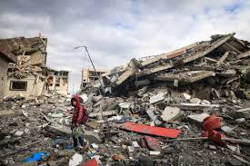

Main Content
The Gaza Strip has been experiencing an unprecedented humanitarian catastrophe and systematic military aggression since October 7th, resulting in catastrophic loss of civilian life and comprehensive destruction of infrastructure.
Statistical Overview: According to verified reports from international organizations and health authorities, the number of martyrs has reached alarming figures, with a disproportionately high percentage being children and women. The attacks have systematically targeted residential areas, healthcare facilities, educational institutions, and essential civilian infrastructure.

Material and economic losses are estimated in billions of dollars, with entire neighborhoods, commercial centers, and agricultural lands completely destroyed. The healthcare system has collapsed under the weight of targeted attacks and blockade, while basic necessities including food, clean water, medical supplies, and electricity remain severely limited or entirely unavailable.

This paragraph demonstrates inline image placement where the image appears within the text flow. The text continues normally after the image, demonstrating how images can be integrated seamlessly within content.
Video documentation: The above video provides evidence of the humanitarian crisis and famine conditions affecting the civilian population in Gaza.